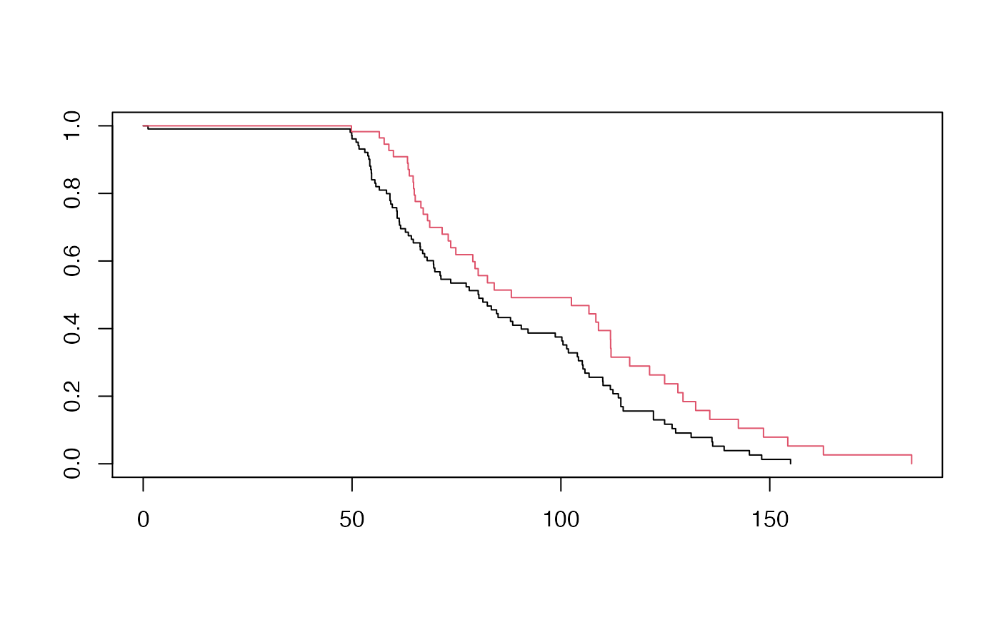

melanoma.Rmdlibrary(survival) library(dplyr) library(ISwR) library(devtools) library(survRM2) library(miboot) # load_all()
data("melanom") db <- melanom db <- db %>% mutate( time = days/30.25, # unit in Month status = ifelse(status %in% c(1,3), 0, 1 ), group = ifelse(thick > median(thick), 1, 0), pattern = ifelse(status == 1, 1, ifelse(time < 8, 2, 3)), log_thick = log(thick) ) %>% arrange(group, status, pattern, time) %>% mutate(id = 1:n()) time <- db$time status <- db$status group <- db$group pattern <- db$pattern x <- db %>% select(sex, log_thick) tau <- 10*12 # db0 <- db %>% select(time, status, sex, log_thick) # fit <- coxph(Surv(time, status) ~ rep(1, nrow(db0)), data = db0, x = TRUE, y = TRUE)
rmst2(time, status, group, tau= tau) #> #> The truncation time: tau = 120 was specified. #> #> Restricted Mean Survival Time (RMST) by arm #> Est. se lower .95 upper .95 #> RMST (arm=1) 92.215 3.428 85.496 98.934 #> RMST (arm=0) 83.333 2.665 78.110 88.555 #> #> #> Restricted Mean Time Lost (RMTL) by arm #> Est. se lower .95 upper .95 #> RMTL (arm=1) 27.785 3.428 21.066 34.504 #> RMTL (arm=0) 36.667 2.665 31.445 41.890 #> #> #> Between-group contrast #> Est. lower .95 upper .95 p #> RMST (arm=1)-(arm=0) 8.882 0.372 17.393 0.041 #> RMST (arm=1)/(arm=0) 1.107 1.005 1.218 0.039 #> RMTL (arm=1)/(arm=0) 0.758 0.572 1.003 0.053
fit <- survfit(Surv(time, status) ~ group, data = db) # Visualize with survminer plot(fit, col = c(1,2))

delta <- c(1,1,1)[pattern] # the third number control delta adjustment for MNAR tmp <- rmst_delta(time, status, x = rep(1, length(time)), group, pattern, delta, tau, n_mi = 50, n_b = 100, seed = 1234) tmp$rmst #> group rmst sd wb_sd #> [1,] 0 83.30155 2.730452 2.329784 #> [2,] 1 92.17112 3.205243 2.801222
diff_rmst <- function(rmst, sd){ diff <- diff(rmst) diff_sd <- sqrt( sum(sd^2) ) p_val <- 2* (1 - pnorm( abs(diff/diff_sd) )) c(diff = diff, sd = diff_sd, p = p_val) } rbind( diff_rmst(tmp$rmst[,"rmst"], tmp$rmst[, "sd"]), diff_rmst(tmp$rmst[,"rmst"], tmp$rmst[, "wb_sd"])) #> diff sd p #> [1,] 8.869577 4.210576 0.03516095 #> [2,] 8.869577 3.643451 0.01491696
delta <- c(1,1,2)[pattern] # the third number control delta adjustment for MNAR tmp <- rmst_delta(time, status, x = rep(1, length(time)), group, pattern, delta, tau, n_mi = 50, n_b = 100, seed = 1234) tmp$rmst #> group rmst sd wb_sd #> [1,] 0 81.34123 2.603153 2.250485 #> [2,] 1 86.34650 2.971458 2.738107
diff_rmst <- function(rmst, sd){ diff <- diff(rmst) diff_sd <- sqrt( sum(sd^2) ) p_val <- 2* (1 - pnorm( abs(diff/diff_sd) )) c(diff = diff, sd = diff_sd, p = p_val) } rbind( diff_rmst(tmp$rmst[,"rmst"], tmp$rmst[, "sd"]), diff_rmst(tmp$rmst[,"rmst"], tmp$rmst[, "wb_sd"])) #> diff sd p #> [1,] 5.005269 3.950439 0.2051496 #> [2,] 5.005269 3.544279 0.1578879
delta <- c(1,1,2)[pattern] # the third number control delta adjustment for MNAR tmp <- rmst_control(time, status, x = x, group, ref_grp = 0, pattern, delta, tau, n_mi = 50, n_b = 100, seed = 1234) tmp$rmst #> group rmst sd wb_sd #> [1,] 0 81.47395 2.611118 2.081097 #> [2,] 1 85.90721 2.958621 2.222821
diff_rmst <- function(rmst, sd){ diff <- diff(rmst) diff_sd <- sqrt( sum(sd^2) ) p_val <- 2* (1 - pnorm( abs(diff/diff_sd) )) c(diff = diff, sd = diff_sd, p = p_val) } rbind( diff_rmst(tmp$rmst[,"rmst"], tmp$rmst[, "sd"]), # Sd from Rubin's rule diff_rmst(tmp$rmst[,"rmst"], tmp$rmst[, "wb_sd"])) # Sd from wild Bootstrap #> diff sd p #> [1,] 4.433261 3.946058 0.2612397 #> [2,] 4.433261 3.044979 0.1454134